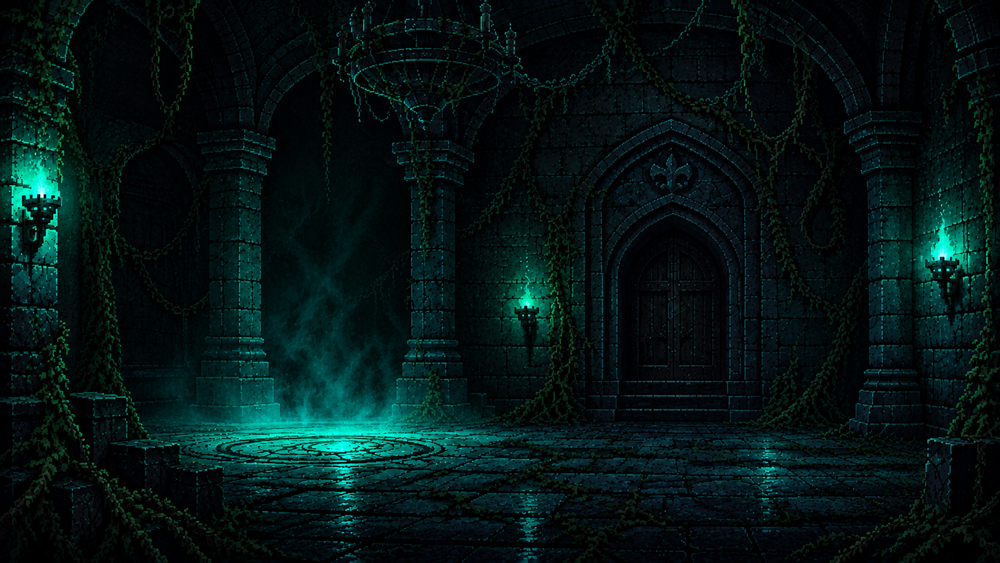
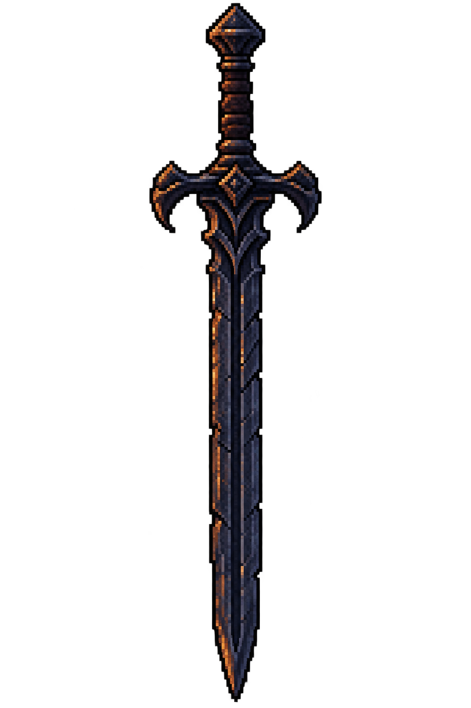

Sob a luz pálida da lua que atravessa os vitrais, uma antiga armadura vigia o salão em silêncio. No canto mais escuro, o brilho frio de uma lâmina chama atenção, aguardando quem tenha coragem de empunhá-la.

Uma névoa espectral e esverdeada rasteja pelas pedras úmidas desta masmorra esquecida. Sussurros ecoam na escuridão, bloqueando a passagem com uma maldição que apenas uma arma antiga pode enfrentar.

Forjada em aço sombrio e marcada por batalhas esquecidas. Empunhar esta lâmina pesada é a única maneira de quebrar o selo da masmorra assombrada e sobreviver ao que espreita lá dentro.